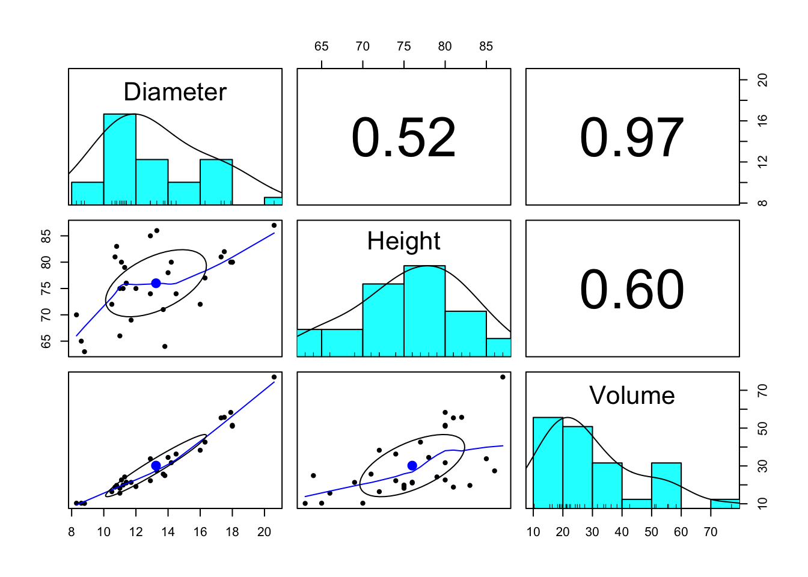
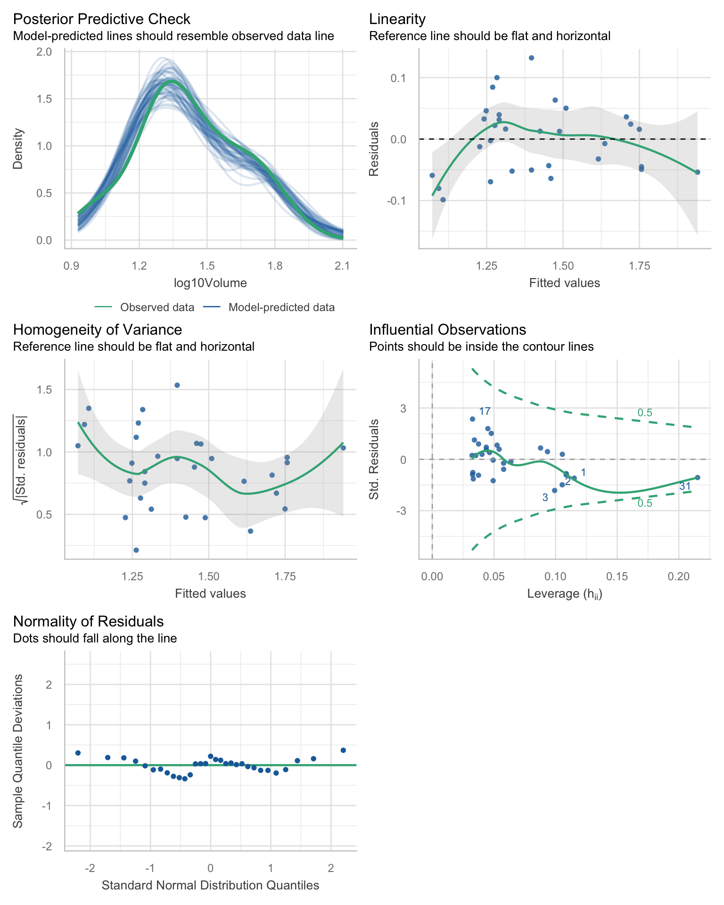
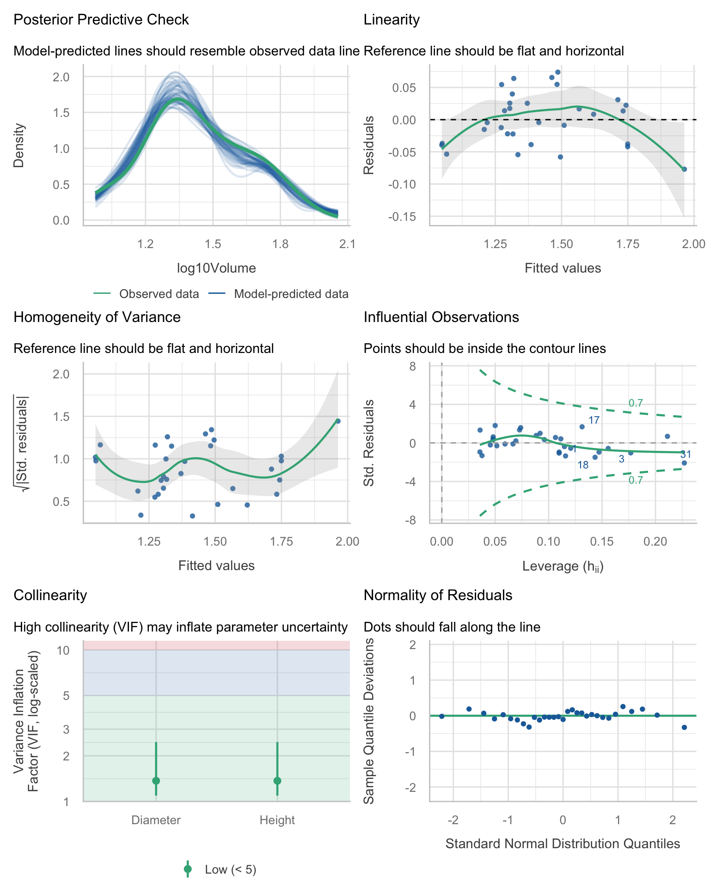

Welcome to week 7!
This week’s lecture introduced you to Simple- and Multiple- Linear Regression. For both of these regression techniques we defined the key steps in model fitting and how to interpret model output.
In this tutorial, we will explore key differences between simple linear regression (SLR) and multiple linear regression (MLR), and we will learn how to fit these models in R. We will also discuss how to test assumptions and evaluate model fit for both types of regression.
You will learn how to:
- Distinguish key similarities and differences between simple linear regression (SLR) and multiple linear regression (MLR) models
- Implement the fitting process for each type of model
- Test assumptions and evaluate model fit of SLR and MLR models.
Simple linear regression vs Multiple Linear Regression
| Element | Simple Linear Regression (SLR) | Multiple Linear Regression (MLR) |
|---|---|---|
| Number of predictors | 1 | 2 or more |
| Model form | Y = \beta_0 + \beta_1x + \epsilon | Y = \beta_0 + \beta_1x_1 + \beta_2x_2 + ... + \beta_nx_n + \epsilon |
| How to fit in R | lm(y ~ x, data = dataset) |
lm(y ~ x1 + x2 + ... + xn, data = dataset) |
| Assumptions | L.I.N.E. | L.I.N.E., collinearity |
| Model evaluation | r^2, residual plots | Adjusted r^2, residual plots, VIF |
| Conclusion | “as x increases, y also increases/decreases by \beta_1 units” | “as x_1 increases, y also increases/decreases by \beta_1 units, holding all other predictors constant” |
1 Setting up for our analysis
1.1 Packages
This tutorial uses tidyverse, readxl, moments, psych, and performance. Install any you are missing by running the following in the console:
If a package is already installed, R will simply reinstall it — no harm done.
1.2 The data
For both examples we will use the trees dataset, which is an in-built dataset provided by R. It contains measurements of diameter (inches), height (feet) and volume of timber (cubic feet) of 31 felled Black Cherry trees.
Volume will be our response variable for both models.
Note: the ‘girth’ variable within the dataset is actually the diameter of the tree. We can rename it now, which also adds it into our R Environment:
Diameter Height Volume
1 8.3 70 10.3
2 8.6 65 10.3
3 8.8 63 10.2
4 10.5 72 16.4
5 10.7 81 18.8
6 10.8 83 19.7Original data source:
Meyer H. A. (1953). Forest Mensuration. Penns Valley Publishers.
Ryan T. A., Joiner B. L., Ryan B. F. (1976). The Minitab Student Handbook. Duxbury Press, North Scituate, MA. ISBN 087150359X
2 Analysis
Exercise 1: State the models and hypotheses
Part A — Simple linear regression
The statistical model for a simple linear regression is:
y_{i} = \beta_0 + \beta_1x_i + \epsilon_{i}
Where:
- y_{i} is the response variable (Volume) for the ith observation when the predictor X = x_i (Diameter)
- \beta_0 is the intercept where the regression line crosses the y-axis (the expected timber Volume when Diameter is 0)
- \beta_1 is the slope of the regression line, which represents the change in timber Volume for a one-unit increase in Diameter
- \epsilon_{i} is the random error term for the ith observation and is assumed to be normally distributed with mean 0 and constant variance
OR if written in terms of the variables in our dataset, the model would be:
Volume = \beta_0 + \beta_1\cdot \ Diameter + \epsilon_{i}
H_0: \beta_1 = 0 , The slope is equal to zero, i.e. there is no relationship between Diameter and Volume
H_1: \beta_1 \neq 0 , The slope is not equal to zero, i.e. There is a relationship between diameter and volume
Part B — Multiple linear regression
The statistical model for a multiple linear regression with 2 predictors is:
y_{i} = \beta_0 + \beta_1x_1 + \beta_2x_2 + \epsilon_{i}
Where:
- y_{i} is the response variable (timber volume) for the ith observation
- \beta_0 is the intercept where the regression line crosses the y-axis
- \beta_1 is the slope of the regression line for the first predictor, which represents the change in Volume for a one-unit increase in tree Diameter
- \beta_2 is the slope of the regression line for the second predictor, which represents the change in Volume for a one-unit increase in tree Height
- \epsilon_{i} is the random error term for the ith observation and is assumed to be normally distributed with mean 0 and constant variance
OR if written in terms of the variables in our dataset, the model would be:
Volume = \beta_0 + \beta_1\cdot \ Diameter + \beta_2\cdot \ Height + \epsilon_{i}
For Multiple linear regression we are testing two (or more) predictors, so we have multiple null and alternative hypotheses to test.
First we test the partial regression coefficients for each predictor:
H_0: \beta_1 = 0 , The partial regression slope is equal to zero, i.e. there is no relationship between Diameter and Volume
H_1: \beta_1 \neq 0 , The partial regression slope is not equal to zero, i.e. There is a relationship between diameter and Volume
H_0: \beta_2 = 0 , The partial regression slope is equal to zero, i.e. there is no relationship between Height and Volume
H_1: \beta_2 \neq 0 , The partial regression slope is not equal to zero, i.e. There is a relationship between Height and Volume
Then we also test the overall model:
H_0: \beta_1 = \beta_2 = 0 (all partial regression slopes are equal to zero, i.e. there is no relationship between diameter, height and volume)
H_1: \beta_1 \neq 0 and/or \beta_2 \neq 0 (at least one partial regression slope is not equal to zero, i.e. there is a relationship between either diameter and volume, or height and volume).
You should now be able to write down the model equation for both simple and multiple linear regression, and state the associated null and alternative hypotheses. You should also be able to explain why multiple linear regression requires a separate null hypothesis for each partial regression coefficient, as well as a null hypothesis for the overall model.
Exercise 2: Explore the data
Part A — Distributions
For each variable we need to check the distribution, identify outliers and check for correlations between predictors (for MLR).
Diameter Height Volume
Min. : 8.30 Min. :63 Min. :10.20
1st Qu.:11.05 1st Qu.:72 1st Qu.:19.40
Median :12.90 Median :76 Median :24.20
Mean :13.25 Mean :76 Mean :30.17
3rd Qu.:15.25 3rd Qu.:80 3rd Qu.:37.30
Max. :20.60 Max. :87 Max. :77.00 Diameter Height Volume
3.138139 6.371813 16.437846 Diameter Height Volume
0.5263163 -0.3748690 1.0643575 The mean diameter is 13.25 inches and the median is 12.90 inches. The values range from 8.30 to 20.60 inches and the standard deviation is 3.14 inches. There is a slight skew, indicated by the skewness coefficient of 0.526. The slight skew is also visible in the following boxplot where the median lies closer to the first quartile.
The mean and median height is 76 feet and the values range from 63 to 87 feet. The standard deviation is 6.37 feet and the skewness coefficient is -0.37, indicating a relatively symmetrical distribution. The boxplot also shows a relatively symmetrical distribution, with the median lying close to the centre of the box.
The mean volume of timber is 30.17 cubic feet and the median is 24.20 cubic feet. The values range from 10.20 to 77.00 cubic feet and the standard deviation is 16.44 cubic feet. The skewness coefficient is 1.06, indicating that the variable is positively skewed. This is also visible in the boxplot, where the median lies closer to the first quartile and there are some high values that are potential outliers.
Why do the high values matter?
The high values would have high leverage in our model, causing the residuals to be skewed, violating our assumptions. The boxplot is therefore telling us that we might need to transform Volume to stabilise the variance of the regression, but it is worth confirming this with the diagnostic plots after fitting the model.
Part B — Correlations
For both simple and multiple linear regression we need to check the correlation between our response variable and our predictor variable.
For multiple linear regression it is also important to check the relationships between the predictor variables, as a strong correlation may indicate collinearity, which can influence the model.
We will start by looking at all correlations, and then for our simple linear regression we will select the variable that has the strongest correlation with the response (Volume) to use as our single predictor variable.
First we will use the correlation coefficient to understand the strength and direction of the relationships between the variables. Then we can look at the scatterplots between variables to verify the correlation coefficients and identify if there are any other types of relationships (e.g. non-linear) that may be occurring between variables.
Correlation coefficients only measure the strength and direction of LINEAR relationships.
It is therefore important to visualise the relationships between variables to check for non-linear relationships, which may not be captured by the correlation coefficient.
Let’s have a look at the correlation coefficients between variables:
Diameter Height Volume
Diameter 1.0000000 0.5192801 0.9671194
Height 0.5192801 1.0000000 0.5982497
Volume 0.9671194 0.5982497 1.0000000The correlation coefficient between Volume and Diameter is 0.967, which indicates a very strong positive linear relationship.
The correlation coefficient between Volume and Height is 0.598, which indicates a weak positive linear relationship.
The correlation coefficient between Diameter and Height is 0.519, which indicates a weak positive linear relationship, suggesting that there may be collinearity between these two predictor variables.
Now let’s look at the scatterplots between variables to verify these relationships:
The scatterplots confirm the strong positive linear relationship between Volume and Diameter as we can see the points following a clear trend on the plot. The points in the plot between height and volume also seem to follow a weaker positive trend as they appear more scattered across the plot area.
This is similar in the scatterplot between diameter and height where the points are also quite scattered but still follow a weak positive trend.
You are welcome to use the above code to create scatterplots between each pair of variables, and calculate the correlation coefficients separately, but if you prefer something cleaner, you can also use the pairs.panels() function from the psych package which produces a neat array of plots and coefficients.

We can see the function produces scatterplots and correlation coefficients between each variable, as well as histograms for each individual variable. The histograms can supplement our EDA where we are looking at the distribution for each variable.
We have identified some potential collinearity occurring between height and diameter, but we will run the models today. Next week we will cover how to manage collinearity in MLR.
You should now be able to describe the distribution of each variable using summary statistics, histograms and boxplots, and identify any potential outliers. You should also be able to use correlation coefficients and scatterplots to identify the strength and direction of relationships between variables, and to spot potential collinearity between predictor variables.
Exercise 3: Fit models and check assumptions
Our correlation analyses identified that Diameter is more strongly correlated with Volume, so we will use Diameter as our predictor variable in the simple linear regression.
Fitting multiple and simple linear regression uses the same function in R, you just need to add on the additional predictors for multiple linear regression.
Once you have fitted the models, you then need to check the assumptions have been met.
You can check model assumptions using the plot() function, but the check_model() function from the performance package produces a more comprehensive set of diagnostic plots to check assumptions.
Part A — Simple linear regression
Our assumptions for a simple linear regression are L.I.N.E. - Linearity, Independence, Normality, Equal variance. We also need to check if there are any observations that are having a larger influence on the model (higher leverage).
L: The Linearity (residuals vs fitted) plot shows the residuals are not randomly scattered around the horizontal line at 0. This tells us that there is a non-linear relationship between diameter and volume.
I: The Independence assumption is met as the data is collected from different trees, so the observations are independent of each other.
N: The Normality (QQ) plot shows that the residuals mostly follow the straight line, which indicates that the residuals are normally distributed. It looks like the assumption of normality has been met.
E: The residuals vs fitted plot also shows the reference line is not flat and the points are not evenly scattered. This tells us that the variance of the residuals is not constant across all levels of diameter, which violates the assumption of equal variance (homoscedasticity).
Influential observations: The residuals vs leverage plot shows that there is an outlier in the data which may have an influence on the model. This is likely due to the high values of volume that we identified in our EDA.
Decision: Our assumptions are not met, and we know that the volume variable is positively skewed, so we will log transform the response variable to stabilise the variance of the regression and manage the leverage of the outliers in the variable. This should reduce the skew and help meet our assumptions.

L: The Linearity (residuals vs fitted) plot looks better, with more points following the line. The line still does not perfectly follow the horizontal line at 0, but it is much improved from the previous plot, so we can say that the linearity assumption is now mostly met. If we wanted to, it would also be worth exploring non-linear modelling but we will not cover that today.
I: The Independence assumption is met as the data is collected from different trees, so the observations are independent of each other. (same as before; not something we can always test for and it links back to the original experimental design).
N: The Normality (QQ) plot shows that the residuals follow the straight line much better now, which indicates that the residuals are normally distributed. It looks like the assumption of normality has been met.
E: The standardised residuals vs fitted plot shows the reference line is flatter, does not deviate as much as before, and the points are a bit more scattered. This tells us that the variance of the residuals has improved to a point where we can continue to our analyses. If you have something like this in a report, it is worth acknowledging that other models may be more appropriate and worth exploring.
Influential observations: The residuals vs leverage plot is no longer showing a point outside the dashed (Cook’s distance) line. This means there are no longer observations that are having a higher influence on the model and we can proceed with our model interpretation.
Decision: Transforming Volume has helped us meet the model assumptions.
Some of the diagnostics have told us the relationship may be non-linear, so in the real world we would also consider fitting alternative models to see if there is something better out there to represent the relationship between tree volume and diameter. This is especially important if we wanted to use the model for prediction.
Part B — Multiple linear regression
Our assumptions for a multiple linear regression are L.I.N.E. - Linearity, Independence, Normality, Equal variance AND collinearity. We also need to check if there are any observations that are having a larger influence on the model (higher leverage).
L: The Linearity (residuals vs fitted) plot shows the residuals are not randomly scattered around the horizontal line at 0. This tells us that there is a non-linear relationship between our predictors and volume.
I: The Independence assumption is met as the data is collected from different trees, so the observations are independent of each other. (this is same as before; not something we can always test for and it links back to the original experimental design).
N: The Normality (QQ) plot shows that the residuals mostly follow the straight line, which indicates that the residuals are normally distributed. It looks like the assumption of normality has been met.
E: The residuals vs fitted plot also shows the reference line is not very flat and the points are not evenly scattered. This tells us that the variance of the residuals is not constant across our predictors, which violates the assumption of equal variance (homoscedasticity).
Influential observations: The residuals vs leverage plot shows no points lying outside the Cook’s distance (dashed) line, telling us that there are no single values influencing the model.
Collinearity: We can check for collinearity using the VIF (Variance Inflation Factor) which is provided in our
check_model()function from theperformancepackage. A VIF value above 5 (or 10, depending on who you ask) indicates a potential issue with collinearity. In our model, the VIFs for Diameter and Height are both low (< 5), which indicates that there is no issue with collinearity between these two predictor variables.
Decision: Our assumptions are not met, and we know that the volume variable is positively skewed, so like in our simple linear regression, we will use log-transformed Volume to stabilise the variance of the regression. This should reduce the skew and help meet our assumptions.

L: The Linearity (residuals vs fitted) plot looks slightly better, with more points following the line. The line still does not perfectly follow the horizontal line at 0, but it is improved from the previous plot, so we can say that the linearity assumption is now mostly met. If we wanted to, it would also be worth exploring non-linear modelling but we will not cover that today.
I: The Independence assumption is met as the data is collected from different trees, so the observations are independent of each other. (same as before; not something we can always test for and it links back to the original experimental design).
N: The Normality (QQ) plot shows that the residuals follow the straight line much better now, which indicates that the residuals are normally distributed. It looks like the assumption of normality has been met.
E: The standardised residuals vs fitted plot shows the reference line is flatter and the points are a bit more scattered. This tells us that the variance of the residuals has improved to a point where we can continue to our analyses.
Influential observations: The residuals vs leverage plot shows the points are closer to the dashed line centred at 0 and no points are outside the dashed (Cook’s distance) line, indicating that there are no individual observations impacting on the model.
Decision: Similar to the simple linear regression, transforming Volume has helped us meet the model assumptions.
Also similar to the simple linear regression, some of the diagnostics have told us the relationship may be non-linear, so in the real world we would also consider fitting alternative models to see if there is something better out there to represent the relationship between tree volume and diameter. This is especially important if we want to use the model for prediction.
You should now be able to test assumptions for simple linear regression and multiple linear regression.
We can now move onto interpretation!
Exercise 4: Evaluate model fit
Part A — Simple linear regression conclusion
Call:
lm(formula = log10Volume ~ Diameter, data = trees)
Residuals:
Min 1Q Median 3Q Max
-0.09867 -0.04981 0.01255 0.03444 0.13218
Coefficients:
Estimate Std. Error t value Pr(>|t|)
(Intercept) 0.485974 0.045176 10.76 1.23e-11 ***
Diameter 0.070601 0.003321 21.26 < 2e-16 ***
---
Signif. codes: 0 '***' 0.001 '**' 0.01 '*' 0.05 '.' 0.1 ' ' 1
Residual standard error: 0.05708 on 29 degrees of freedom
Multiple R-squared: 0.9397, Adjusted R-squared: 0.9376
F-statistic: 452 on 1 and 29 DF, p-value: < 2.2e-16- State the model equation
Model equation is log10(Volume) = 0.486 + 0.0706 \cdot Diameter
- Interpretation of regression coefficients
For every 1 unit change in Diameter, we expect a 0.0706 increase in log10(Volume).
- P-value
The P-value for the slope coefficient is < 0.001, meaning we reject our null hypothesis that the slope is equal to zero (H_0: \beta_1 = 0) and conclude that Diameter is a significant predictor of log10(Volume).
- R-squared
As we only have one predictor in the model, we can use the r2 value rather than the adjusted r2.
The r2 value is 0.94, which means that 94% of the variation in log10(Volume) can be explained by Diameter. This is a very strong r2 value, suggesting that Diameter alone is able to explain most of the variation in log10(Volume).
Part B — Multiple linear regression conclusion
Call:
lm(formula = log10Volume ~ Diameter + Height, data = trees)
Residuals:
Min 1Q Median 3Q Max
-0.076991 -0.037357 -0.004312 0.025586 0.073835
Coefficients:
Estimate Std. Error t value Pr(>|t|)
(Intercept) 0.044552 0.093510 0.476 0.637
Diameter 0.063098 0.002861 22.057 < 2e-16 ***
Height 0.007116 0.001409 5.051 2.41e-05 ***
---
Signif. codes: 0 '***' 0.001 '**' 0.01 '*' 0.05 '.' 0.1 ' ' 1
Residual standard error: 0.04202 on 28 degrees of freedom
Multiple R-squared: 0.9684, Adjusted R-squared: 0.9662
F-statistic: 429.7 on 2 and 28 DF, p-value: < 2.2e-16- State the model equation
Model equation is:
log10(Volume) = 0.0446 + 0.0631 \cdot Diameter + 0.0071 \cdot Height
- Interpretation of regression coefficients
Holding all other variables constant: (very important to include this)
For every 1 unit change in Diameter, we expect a 0.0631 increase in log10(Volume);
For every 1 unit change in Height, we expect a 0.0071 increase in log10(Volume).
- P-value
When assessing the p-values, we must consider the p-value associated with each partial regression coefficient, as well as the overall model.
- Relationship between Diameter and log10(Volume):
The P-value for the partial regression coefficient is < 0.001, meaning we reject our null hypothesis that the slope is equal to zero (H_0: \beta_1 = 0) and conclude that Diameter is a significant predictor of log10(Volume).
- Relationship between Height and log10(Volume):
The P-value for the partial regression coefficient is < 0.001, meaning we reject our null hypothesis that the slope is equal to zero (H_0: \beta_2 = 0) and conclude that Height is also a significant predictor of log10(Volume).
- Overall model:
The P-value for the model is < 0.001, indicating that at least one slope is not equal to zero. This means we reject our null hypothesis that all partial slopes are equal to zero (H_0 : \beta_1 = \beta_2 = 0) and conclude that our model is significant.
- R-squared
As we have more than one predictor in the model, we will need to use the adjusted r2. We will cover the reason for this in next week’s lecture.
The adjusted r2 value is 0.97, which means that 97% of the variation in log10(Volume) can be explained by our model. This is a very strong r2 value. Although there was some correlation between Diameter and Height in our EDA, the VIFs from our diagnostics were low, so collinearity is unlikely to be influencing our model.
You should now be able to interpret the summary output of a fitted simple and multiple linear regression, including the model equation, the regression coefficients, the p-values and the (adjusted) r-squared. You should also be able to explain why multiple linear regression uses the adjusted r-squared rather than the r-squared, and why the interpretation of a partial regression coefficient always requires the phrase “holding all other variables constant”.
Wrap-up
In this tutorial, we have walked through the processes for simple and multiple linear regression, including how to fit models, check assumptions and how to interpret the output. You will hopefully now be able to recall key differences between the two types of models, which will help direct your analysis.
You will now apply these skills in the lab. If you have any questions please reach out to your tutors.
Example exam questions
Describe 3 key differences between simple linear regression and multiple linear regression.
Describe how we would check the assumptions of a multiple linear regression. What would we do if we found that one of the assumptions was violated?
If you fitted a multiple linear regression and only one predictor was significant, would you still expect the model to be significant? Justify your answer (it may help to recall the hypotheses for MLR).